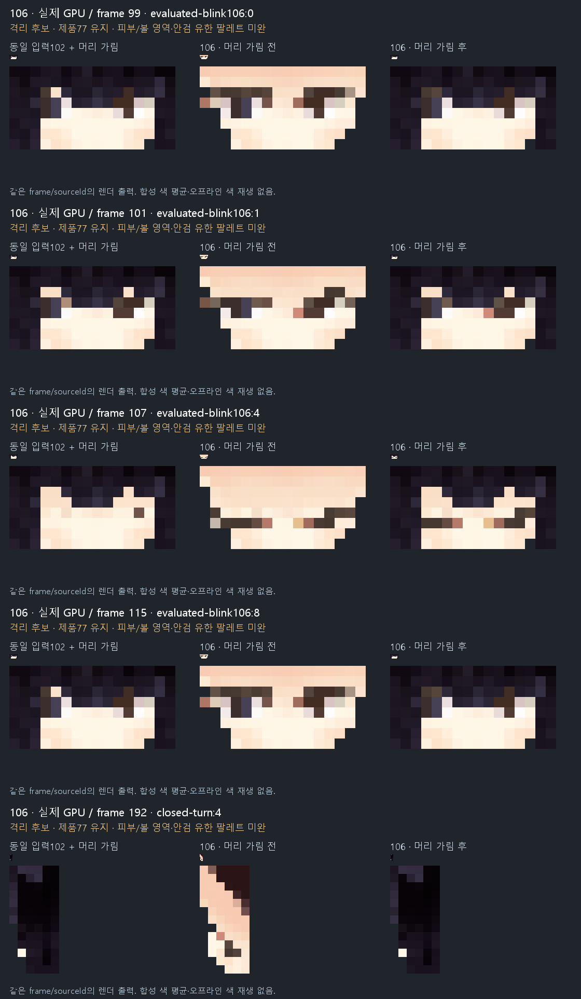
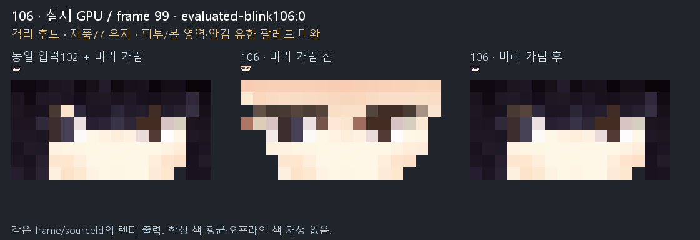
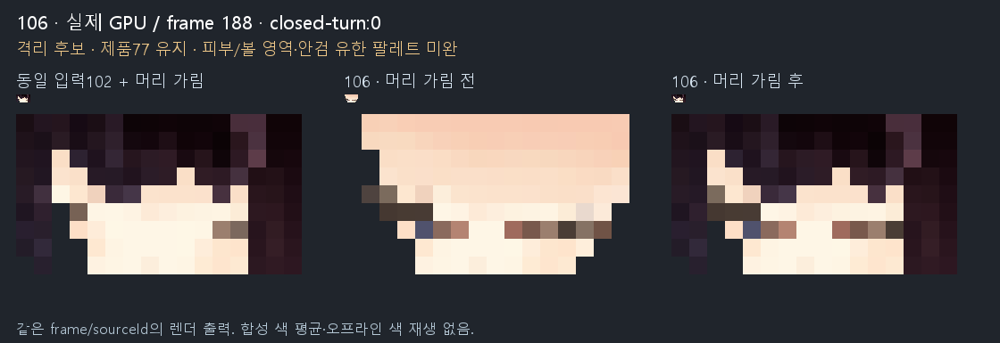
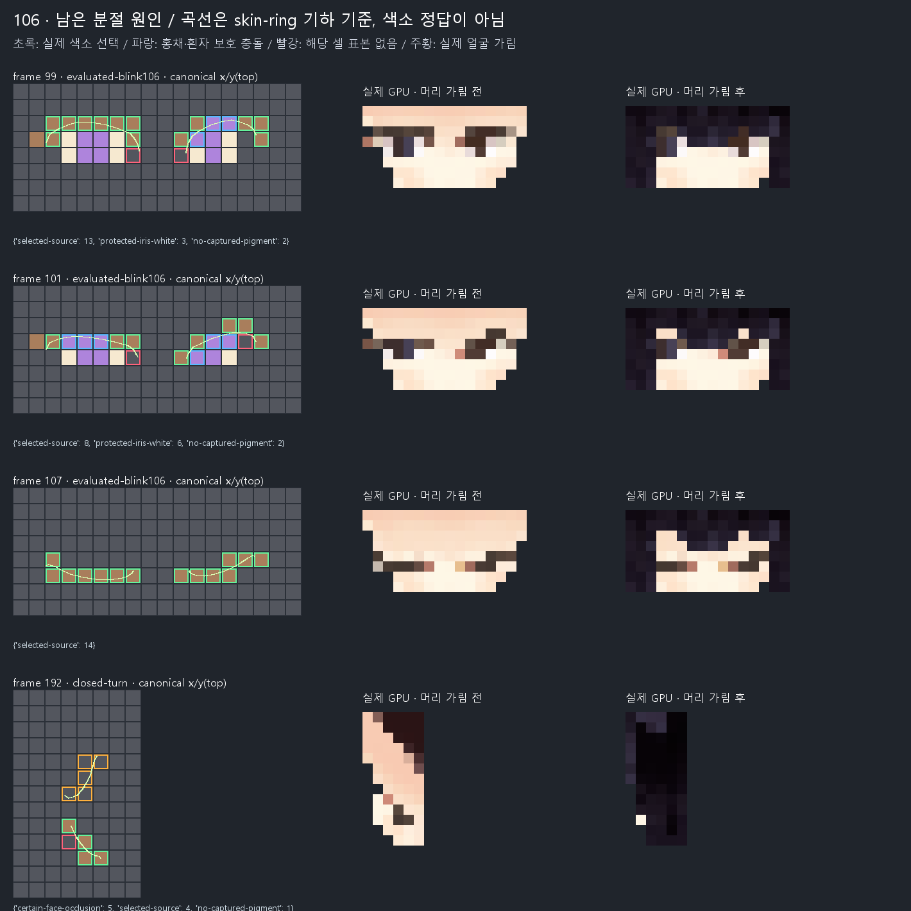

제품 기본77 유지. 현재 변형된 native skin-ring 상부 곡선을 매 프레임 생성·업로드하고 GPU가 같은 셀의 확정 가시 색소/깊이를 선택한 격리 후보입니다. 고정 Close값·눈 크기·셀 수·6+2 배치가 없습니다. skin-ring은 작가가 그린 색소 윤곽 정답이 아닙니다.
1 Play에서 51상태를 캡처했습니다. 51연속 프레임이라는 뜻은 아닙니다. 부분 Close 9상태, 열린 눈 위상10·보행8·회전10, 닫힌 눈 위상4·회전10입니다. 정상 Present 이력을 유지하며 각 프레임의102/106 입력을 공유했습니다. 관찰기 readback이 실행 시간에 영향을 주므로 실제 성능 시험은 아닙니다.
| 확인 | 결과 |
|---|---|
| CPU↔실제 GPU | 7,500셀, 불일치0. 곡선 CPU→GPU 업로드51/51 동일 |
| 완전 Close | frame107 기존1→14셀, 두 눈 각각 연결7셀. 목표 셀 수를 강제한 결과 아님 |
| 102 보호 | 홍채·흰자 색/owner 유지, 해당 source 팔레트 밖0. reopen의 eye RGBA/owner 원상태 동일 |
| 외부 머리 가림 | 두 경로 8,180회 가림 채택의 source/depth/coverage/owner/RGB 일치. 실제 가림을 뚫는 전역 덮어쓰기 없음 |
| 위상 | 실측0~1px 이동. 열린/닫힌 눈 shape ID 각각1종. native 안검 UV 변화에 따른 최대2코드 RGB8 변동은 남음 |
| 미통과 | 부분 Close/회전 분절. 홍채·흰자 보호와 곡선의 충돌, 해당4×4 셀 표본 부재, 실제 얼굴 가림을 구분함. 전체 공동 할당 성공 아님 |




frame101: 보호 충돌6셀, 색소 표본 없음2셀. 예: canonical(3,3)은 동일 eye의 확정 가시 색소4표본이 있으나 홍채·흰자 보호로 유지. frame192: 실제 얼굴 가림5셀, 색소 표본 없음1셀. 표본이 없다는 것이 연속 원본 색소의 부재를 입증하지는 않습니다. 근거 없는 연결·색 채우기를 하지 않았습니다.
실제 VRM의 face/eyeline baseColor와 shadeMultiply가 동일 PNG를 공유하며 별도 작가 레이어·볼 특징 mask가 없습니다. material/UV/alpha·native 안검 geometry·등록된 눈 parent/iris·blink morph는 쓸 수 있지만, 이 정보만으로 그라데이션이 그림자 의도인지 볼 칠인지 유일하게 결정할 수 없습니다. authored RGB8의 약한 연결 무늬를 양자화 잡음으로 삭제할 근거도 없습니다.104의 parent36영역을 최종 평면색으로 붕괴시키지 않았습니다.
출처/추가 단서/입력 계약/검토 질문 · GPU 동등성·프레임 · 셀별 가림·잔여 결함·보존 · 원시 자료 해시 · 원시 GPU 자료
20:08:20 UTC Edit, scene clean, dirty31 목록 동일. 비교 가능한46개 직렬화 내용/입력 동일 객체22값·장치/옵션·time·pipeline·global 복원. 임시 AssetImporter1개 unavailable이므로47/47 증명 아님. 보호32파일 동일, RT30→30, Console error0→0. Profiler.GetTotalAllocatedMemoryLong +35,627,715bytes(+33.98MiB); 물리WS나 누수 확정값이 아닙니다. 실제 다중뷰·모델교체는 이번51상태에서 실행하지 않았습니다.
추가한 Unity 자산은 격리 ForwardEye106.compute와 .meta뿐입니다. C#은 외부 runner/adapter로 컴파일했고 프로젝트 C# import/recompile, 씬·재질 저장, 제품77 교체는 하지 않았습니다. 피부/두피/볼 분할·native 안검 유한 팔레트·외곽선은 미완입니다. 미술 성공/전체 움직임 안정화로 판정하지 않습니다.